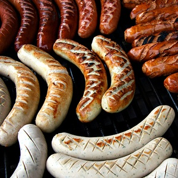

ALEMANIA
(Tierra natal de mi abuela Sarina)
Oficialmente conocida como; República Federal de Alemania, es un país soberano centroeuropeo y miembro de la Unión Europea; se organiza como una república parlamentaria federal y su capital es Berlín. Su territorio limita al norte con el mar del Norte, Dinamarca y el mar Báltico; al este con Polonia y la República Checa; al sur con Austria y Suiza, y al oeste con Francia, Luxemburgo, Bélgica y los Países Bajos.
Con más de 82,67 millones de habitantes, representa la mayor población entre los estados miembros de la Unión Europea y es el hogar del tercer mayor grupo de emigrantes internacionales. Después de los Estados Unidos, Alemania es el segundo destino de las migraciones más popular en el mundo.
Alemania es miembro de la Organización de las Naciones Unidas, la OTAN, el G8, las naciones G4. Es la cuarta mayor economía mundial en cuanto al PIB nominal, la primera de Europa.
Es una república federal, democrática, representativa y parlamentaria
El cristianismo es la religión mayoritaria, con 48 millones de adeptos (61 %). La segunda más extendida es el islam, con 4 millones de seguidores (5 %), seguido por el budismo y el judaísmo, ambos con cerca de 200.000 adeptos (0,25 %). El hinduismo tiene unos 90.000 adeptos (0,1 %). Todas las demás comunidades religiosas tienen menos de 50.000 (o inferior a 0,05 %) adherentes. Cerca de 19,9-24 millones de alemanes (25-33 %) no han registrado denominación religiosa.
El alemán es el oficial y principal idioma hablado en Alemania.
La cocina alemana varía enormemente de una región a otra. Las regiones del sur de Baviera y Suabia, por ejemplo, comparten una cultura culinaria con Suiza y Austria. Carne de cerdo, carne de vacuno, y aves de corral son las principales variedades de la carne consumida, con la carne de cerdo como la más popular. A lo largo de todas las regiones, la carne se come con frecuencia en forma de salchicha. Más de 1500 diferentes tipos de salchichas se producen en el país.

Al ser un país de inmigrantes, ha adoptado muchos platos internacionales. Platos italianos como pizza y pasta, o turcos y árabes como el kebab están bien establecidos, sobre todo en ciudades grandes. Restaurantes chinos y griegos están también considerablemente extendidos. La bebida nacional es la cerveza.
Historia de los judíos en Alemania
Los judíos llegaron en tiempos del Imperio romano. A esta zona se le identificó con el nombre de la tierra de Askenaz, de ahí su denominación de askenazíes.
Los judíos vivían principalmente del comercio y gozaban de una gran autonomía. Las comunidades judías se desarrollaron hasta fines del siglo XI gracias a la tolerancia de los soberanos. Los judíos alemanes hablaban un dialecto germánico; el yiddish, que se convertirá en la lengua de todos los judíos de la Europa Central.
Los judíos vivían bajo la protección directa del emperador y pudieron desarrollarse tanto en el comercio como a nivel espiritual. Se les situó en ciudades especiales, donde tenían autonomía religiosa. Se profundizó el estudio del Talmud y de la Torá.
Pero llegaron las cruzadas y todo cambió. Se produjeron numerosas masacres de poblaciones judías. Presentes desde hacía siglos, los judíos se convirtieron de repente en extranjeros y en asesinos de Cristo que debían ser castigados antes de liberar los lugares santos. Fueron masacradas comunidades a todo lo largo del camino de las cruzadas. Las sinagogas y los otros edificios de la comunidad fueron destruidos.
Comenzaron los libelos, acusaciones falsas sobre actos nunca cometidos por los judíos. Lo que trajo como consecuencia el asesinato de miles de judíos inocentes, bienes de los judíos fueron saqueados y repartidos entre la burguesía, el obispo y la municipalidad.
La condición de los judíos alemanes cambió drásticamente. Se convirtieron en siervos de la Casa imperial. Se les ordenó llevar consigo una marca de su diferencia: un sombrero particular en forma de cono. También se requirió que todos los judíos vivieran en barrios reservados para separarlos de los cristianos. El aislamiento de los judíos se acentuó.
Las condiciones económicas de los judíos también se modificaron: abandonaron la agricultura y se les cerró las puertas del comercio, por lo que no les quedó más que dedicarse al préstamo, actividad muy impopular que les dio la reputación de usureros y explotadores.
Su aislamiento favoreció el surgimiento del yidis. La evolución lingüística de los judíos alemanes fue, desde entonces, diferente a la del resto del país. El yidis integró palabras del hebreo y se convirtió poco a poco en inteligible para el no-judío.
Muchos judíos emigraron de Alemania a Polonia. El rey Boleslao les otorgó tierras y una condición favorable. A pesar del traslado, mantuvieron al yiddish como su lengua de uso.
A pesar de las persecuciones, los eruditos judíos continuaron comentando la Biblia y el Talmud. Incluso en el período de la gran peste no puso fin a sus actividades intelectuales. De hecho continuaron viviendo en esta zona y en el año de 1871 se lleva a cabo la emancipación judía, lo que representa el otorgamiento de derechos civiles de igualdad.
Y llegó el iluminismo judío y se desarrollaron en todos los ámbitos de la sociedad y fueron reconocidos y respetados.
Según el censo realizado en enero de 1933, la población judía de Alemania, era de aproximadamente 523.000 habitantes en una población total de 67 millones de personas, es decir, menos del 0,75 por ciento. Pero con la llegada de Hitler al poder muchos judíos emigraron y para junio de ese mismo año eran 505.000.
Con el ascenso de Hitler al poder en 1933, muchos judíos emigraron; la gran mayoría de los que permanecieron en el país, murió asesinada por los nazis. Meses después del fin de la guerra, alrededor de 200.000 judíos provenientes de Europa oriental que fueron liberados de los campos de concentración, se quedaron en Alemania mientras recibían visas para emigrar a Estados Unidos, Canadá o Australia. Para finales de la década de los cincuenta, gran parte había salido (incluida la familia de mi abuela Sarina) y tan solo alrededor de 20.000 judíos en tierras germanas.
Por muchos años, las comunidades estuvieron constituidos por personas de edad avanzada con escasa vida judía: pocos servicios religiosos, dos escuelas judías y los periódicos judíos tenían una circulación muy pequeña. La situación comenzó a cambiar con la desintegración de la Unión Soviética y la reunificación alemana. En 1990, el canciller Helmut Koh1 autorizó la inmigración de judíos de la ex URSS; alrededor de 190.000 judíos de Europa oriental, principalmente rusos, se establecieron en Alemania, de los cuales 80.000 se incorporaron a las comunidades judías.
Se calcula que actualmente la comunidad judía en Alemania es una de las de mayor crecimiento. De hecho, hoy en día es la octava más grande a nivel mundial. Está conformada por 110.000 judíos.
El Consejo central de los judíos en Alemania es la organización que representa a todos los judíos en el país y el Estado alemán le proporciona ayuda financiera que proviene de los impuestos religiosos recabados.
Hacia el año 2014 la comunidad judía de Alemania rondaba las 118.000 personas, haciendo de ésta la tercera comunidad judía más grande de Europa detrás de las de Francia y el Reino Unido.